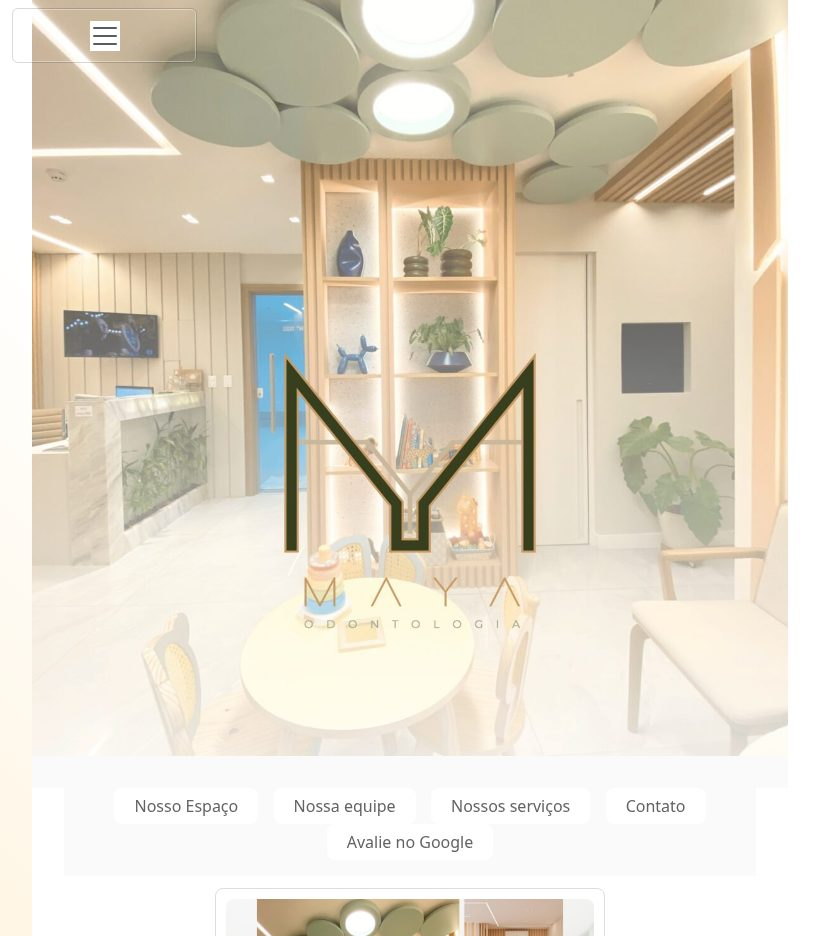
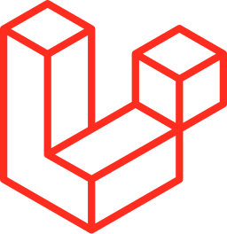
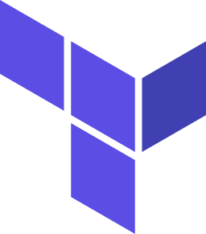

Desenvolvedor Web na ADDSALES desde 2024
Desenvolvedor PHP e DevOps em São Luís
Sistemas em Laravel, integrações de API e chatbots de WhatsApp no Typebot. Do código ao servidor, com Docker, Terraform e Ansible.

Serviços em PHP, APIs e nuvem
O que faço hoje na ADDSALES e em projetos próprios. Preço sob consulta.
- Sistemas em Laravel
Manutenção e evolução, com consultas SQL que mantêm o banco íntegro.
PHP - Integração de APIs
Dados de APIs externas processados e guardados com segurança.
REST - Chatbots no WhatsApp
Fluxos no Typebot validados em JavaScript e ligados a rotas de API.
Typebot - Infraestrutura como código
Servidores descritos em Terraform e Ansible, na AWS ou na Azure.
IaC

Laravel
TerraformDevOps
Fui selecionado entre 30 participantes do Caça Talentos em DevOps da 4Linux. Lá estudei Terraform e Ansible na AWS, e hoje os meus projetos sobem em containers Docker.
4 sites de clientes no ar
Servidos por este domínio, em Docker.
Experiência desde 2021
Bacharel em Ciência da Computação.
- ADDSALES
Desenvolvedor web JR III
2025 a hoje - ADDSALES
Desenvolvedor web JR I
2024 a 2025 - UEMANET
Tutor remoto e curso de Git
2024 a hoje - Grupo Innovare
Analista de suporte
2021 a 2022